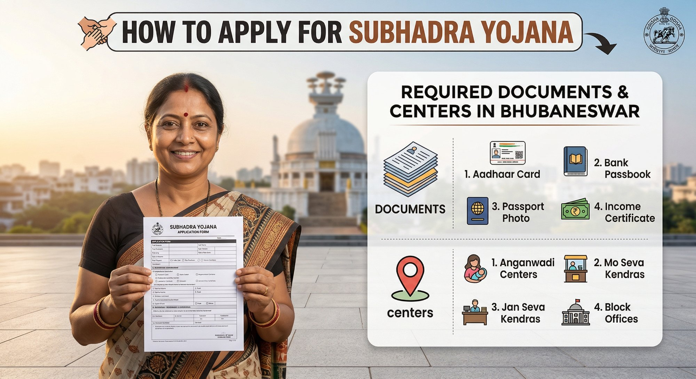

Most retired families in Bhubaneswar parking money in bank FDs at 7.0–7.5% are leaving 0.5–1.2% on the table every year. On ₹15 lakh — the amount a retired government employee might put away from gratuity — that gap is ₹7,500–₹18,000 per year in foregone quarterly income. Every year. For five years.
SCSS is not a new scheme. It has been running since 2004. The reason most families still don’t have one is not eligibility — it’s that nobody explained where exactly to go in Bhubaneswar, what to bring, and what the process looks like from the counter.
SCSS at a Glance — March 2026
| Feature | Details |
|---|---|
| Interest Rate | 8.2% per annum (March 2026) |
| Interest Payout | Quarterly — 1st April, 1st July, 1st October, 1st January |
| Minimum Deposit | ₹1,000 |
| Maximum Deposit | ₹30 lakh (per individual) |
| Tenure | 5 years (extendable by 3 years once) |
| Eligibility Age | 60+ years; 55+ for VRS/superannuation retirees (within 1 month); Defence retirees 50+ |
| Joint Account | With spouse only; second holder has no independent deposit right |
| Premature Withdrawal | Allowed; penalties apply (see below) |
| Tax on Interest | Taxable as per income slab; TDS deducted if interest exceeds ₹50,000/year |
| 80C Deduction | Available on deposit amount (up to ₹1.5 lakh limit) |
| Where to Open | Post offices, SBI, UCO Bank, Canara Bank, Bank of Baroda |
Who Is Eligible?
Age 60 and above: Any Indian resident. No employment condition.
Age 55–60 (VRS / superannuation): Must have received retirement benefits. Account must be opened within one month of receiving the retirement proceeds. Bring the retirement benefit sanction order.
Defence personnel aged 50–60: Eligible regardless of retirement type — Army, Navy, Air Force, paramilitary. Bring the pension payment order or discharge certificate.
How Much Can You Earn?
On ₹30 lakh at 8.2% per annum — the maximum deposit — the numbers are compelling for any retired household needing regular income:
| Deposit Amount | Annual Interest (8.2%) | Quarterly Payout |
|---|---|---|
| ₹5 lakh | ₹41,000 | ₹10,250 |
| ₹10 lakh | ₹82,000 | ₹20,500 |
| ₹15 lakh | ₹1,23,000 | ₹30,750 |
| ₹20 lakh | ₹1,64,000 | ₹41,000 |
| ₹30 lakh | ₹2,46,000 | ₹61,500 |
That ₹61,500 landing in your account every quarter — April, July, October, January — without any action required. For a retired couple where one person has a pension and the other does not, this quarterly credit covers a significant portion of household expenses.
Documents Required
Carry originals and two photocopies of each. Do not go with only photocopies — every counter will ask to see the original.
Mandatory for All Applicants
- PAN Card — mandatory, without exception. TDS deducted at 10% if PAN is not provided.
- Aadhaar Card — for KYC and address verification
- Age proof — any one of: Aadhaar, PAN, Voter ID, Passport, Birth Certificate. Aadhaar counts for both identity and age if DOB is printed.
- Address proof — Aadhaar suffices if address is current. Otherwise: electricity bill, bank passbook with address.
- 2 recent passport-size photographs (white background preferred)
- Savings account details — passbook page showing account number and IFSC (for interest credit mandate)
For Retired Employees (Age 55–60 under VRS/Superannuation)
- Retirement benefit sanction letter from employer — showing retirement date and benefit amount
- Certificate from employer confirming VRS / superannuation
- Account must be opened within 1 month of receiving the retirement proceeds
For Defence Retirees (Age 50–60)
- Pension payment order (PPO) OR discharge certificate confirming defence service and retirement date
For Joint Account
- Full KYC documents (PAN + Aadhaar + photo) of the joint holder (spouse)
Step-by-Step: How to Open the Account
-
1Decide: Post Office or BankBoth offer the same 8.2% rate. Post office: no need to have an existing account. Bank: existing account holders find it marginally faster — interest credits directly to the savings account at the same branch. SBI also allows SCSS extension via YONO app, which no post office offers.
-
2Collect DocumentsEverything listed above. Print two photocopies of each. Staple one set together for the officer. Carry originals in a separate folder — the officer will verify and return them immediately.
-
3Get and Fill the SCSS Application FormPost office: Form SB-SCSS-1 (pick up at counter or download from indiapost.gov.in). SBI: Form available at the branch or on bank.sbi. Fill in: depositor name, date of birth, address, nominee details, deposit amount, interest credit account details, mode of deposit. Fill nominee details correctly the first time — adding or changing a nominee later requires a separate form and a branch visit.
-
4Submit at the Counter with Cheque / CashCash up to ₹1 lakh (post office). Cheque or DD mandatory above ₹1 lakh. Hand over the filled form, documents, and cheque. The officer will verify, enter in the system, and issue a passbook. The passbook records the deposit amount, account number, maturity date, and interest details.
-
5Collect Your Passbook and VerifyThe SCSS passbook is the primary record. Keep it safe — it is needed for premature withdrawal, extension, and closure. Update it quarterly to verify that interest has been credited correctly. Submit Form 15H every April if your total income is below the taxable limit.
1. General Post Office (GPO), Bhubaneswar — Best for Non-Bank Depositors
🏢 GPO Bhubaneswar — Unit 3, Kharvela Nagar
🏭 Token System OperationalTue–Fri: 9:30 AM – 4:30 PM
Sat: 9:30 AM – 2:30 PM | Sun: Closed
The GPO handles the highest volume of SCSS account openings in Bhubaneswar — multiple counters, staff experienced with the paperwork, and a token queue that moves faster than it looks. Collect your token at the entrance kiosk for the “Small Savings / SCSS” counter before joining any queue. The savings scheme counter is typically on the right wing of the ground floor. For someone opening their first SCSS account without an existing SBI or UCO relationship, the GPO is the most straightforward starting point.
2. Saheed Nagar Sub Post Office — Best for South Bhubaneswar Families
🏢 Saheed Nagar Sub Post Office — Saheed Nagar, Bhubaneswar
🏭 Good Seating, Experienced StaffSun: Closed
Good seating inside — the best reviewer comment noted this specifically. The staff here handles SCSS accounts regularly; one reviewer called this the best post office in India for behaviour and cooperation. The known issue: CBS (Core Banking Solution) link failures are common per multiple reviews — come with time to spare, especially in the afternoon. If you live south of the Vani Vihar corridor — Saheed Nagar, VSS Nagar, Jayadev Vihar — this post office saves a 20-minute trip to the GPO.
3. SBI Local Head Office — Best for Existing SBI Account Holders
🏢 SBI Local Head Office — Unit 3, Kharvela Nagar
🏭 YONO Extension AvailableSun: Closed
For an existing SBI savings account holder, the process is the smoothest here. Interest credits directly to your SBI account. SBI also allows SCSS account extension online through YONO after the initial 5-year period — which no post office offers. If your savings account, pension credit, and FDs are all at SBI and you want the entire relationship consolidated in one passbook and one app: this is the right place.
4. UCO Bank Head Office — Best for Railway Station Area Residents
🏢 UCO Bank Head Office — Ashok Nagar, Bhubaneswar
🏭 Central LocationSat: 10:00 AM – 2:00 PM | Sun: Closed
UCO Bank is an authorised SCSS provider. Multiple reviewers note staff who have been with the bank for years — in practice they’ve processed hundreds of SCSS accounts and know the documentation requirements without referencing a manual. For residents of Ashok Nagar, Old Station Road, and the Master Canteen area, this is a 5-minute walk rather than an auto ride to SBI.
5. Canara Bank, Saheed Nagar Branch — SCSS for South Bhubaneswar Residents
🏢 Canara Bank — Saheed Nagar Branch
🏭 1st Floor, Above ATMSun: Closed
Canara Bank is an authorised SCSS provider. The branch serves a steady client base in the Saheed Nagar, VSS Nagar, and Jayadev Vihar belt. If you’re already a Canara Bank account holder in this area, opening the SCSS here avoids the additional step of setting up an interest credit link to another bank. The branch is compact — one hall, multiple counters. Come before 11:30 AM for shorter queues.
Watch: Senior Citizen Savings Scheme Explained

Premature Withdrawal Rules
SCSS can be closed before maturity — but with penalties on the principal, not on interest already paid. If you’ve received 8 quarterly payments and then close the account in Year 3, those interest payments stay with you.
| Time of Withdrawal | Penalty |
|---|---|
| Before 1 year | No interest paid; principal refunded in full |
| After 1 year but before 2 years | 1.5% deducted from principal |
| After 2 years | 1% deducted from principal |
| After maturity (5 years) | No penalty — full principal + any unpaid interest returned |
Extension After Maturity
At the end of 5 years, you can extend the SCSS account for one block of 3 years. The extended account earns the interest rate prevailing at the time of extension — not the rate at which you opened the original account.
- Apply within 1 year of maturity using Form SB-SCSS-3 (post office) or the bank’s equivalent form
- If no extension request is received, the account continues to earn Post Office Savings Account rate (currently 4% p.a.) — a significant reduction from 8.2%
- At SBI: Extension can be done via YONO app for account holders who opened the original account digitally. Still requires a branch visit if opened via physical form.
TDS and Tax on SCSS Interest
The interest earned on SCSS is fully taxable — it is added to your total income and taxed at your applicable slab rate.
SCSS vs Other Fixed Income Options — March 2026
| Instrument | Rate (p.a.) | Safety | Liquidity | Tax on Interest |
|---|---|---|---|---|
| SCSS | 8.2% | Sovereign | Moderate (penalty for early exit) | Taxable |
| SBI 5-year FD (senior citizen) | 7.50% | Bank guarantee | Moderate | Taxable |
| NSC (5-year) | 7.7% | Sovereign | Low (locked in) | Taxable (accrual) |
| PMVVY (LIC) | 7.4% | Govt-backed | Limited | Taxable |
| RBI Floating Rate Bond | 8.05% | Sovereign | Not premature-closable | Taxable |
| PPF | 7.1% | Sovereign | Very low (15-year lock-in) | Tax-free |
Common Mistakes to Avoid
- Exceeding the ₹30 lakh limit across accounts. The ₹30 lakh cap is per individual across all SCSS accounts — whether at post offices or banks. A person cannot open ₹20 lakh at SBI and ₹15 lakh at the post office. Excess deposits are returned without interest.
- Not submitting Form 15H every April. Without it, TDS is deducted on interest above ₹50,000 — which you then have to claim as a refund when filing ITR. Easier to submit the form and avoid the deduction entirely.
- Opening without a nominee. The form has a nominee section. Fill it. In the event of the depositor’s death, an account without a nominee requires a succession certificate or legal heir affidavit — a process that takes months and causes significant distress to the family.
- Missing the 1-month window for VRS retirees aged 55–60. The account must be opened within one month of receiving retirement benefits. Miss this window and you must wait until you turn 60.
- Choosing the wrong interest credit account. The quarterly interest is credited to the savings account you specify at opening. If that account becomes inactive or is closed, credits fail and accumulate as uncredited interest — you have to visit the branch to resolve it. Verify the account number and IFSC carefully on the form.